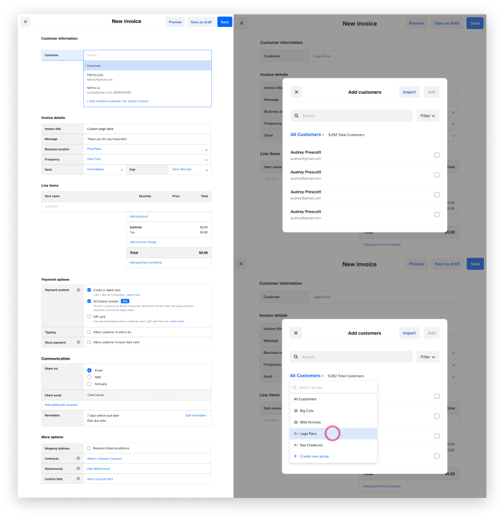
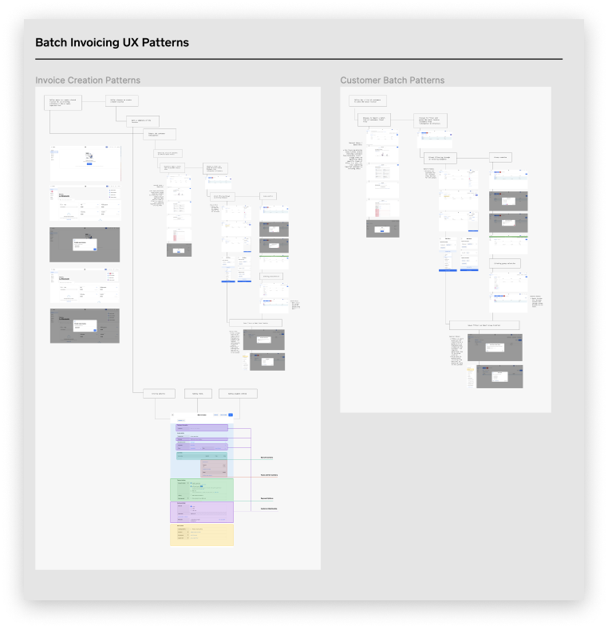
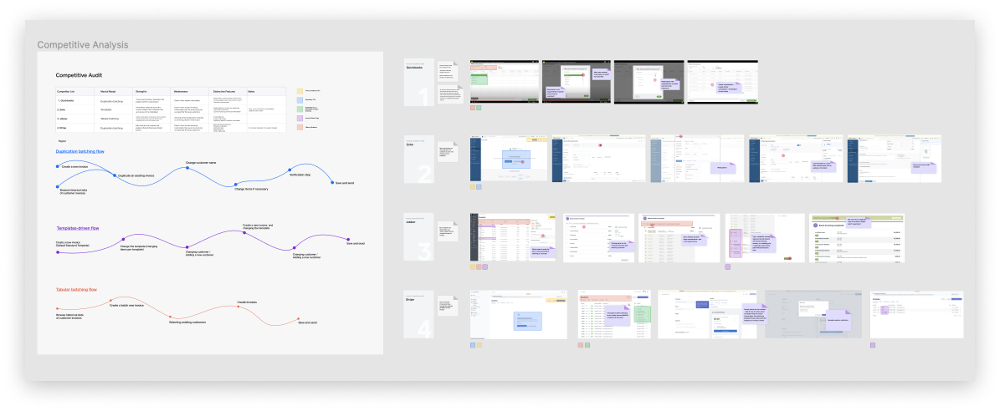
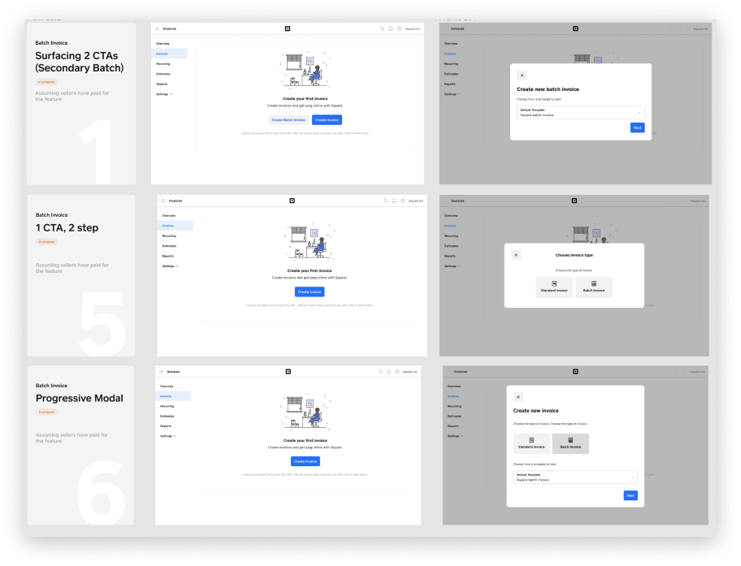
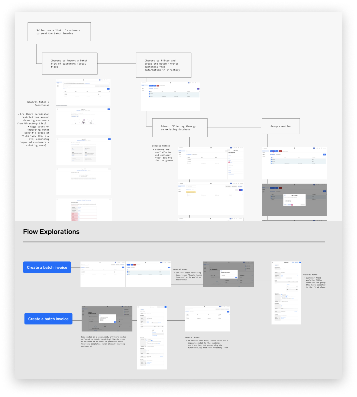
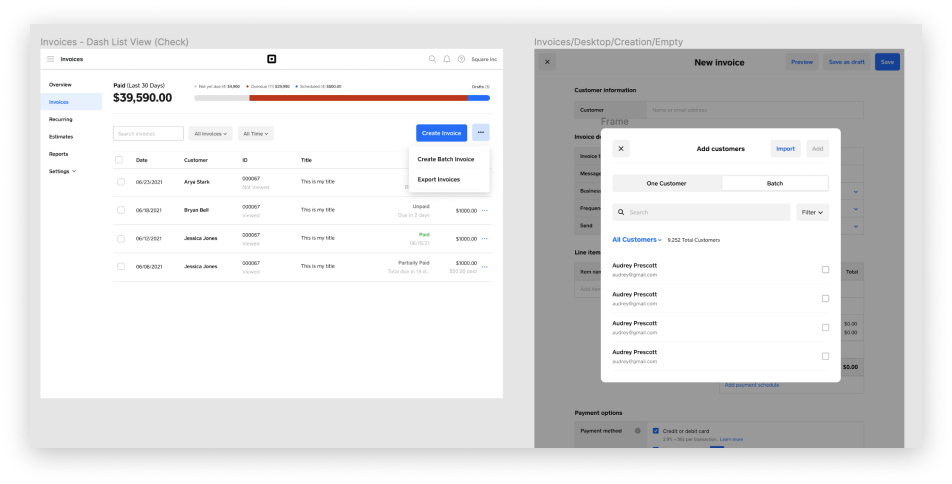
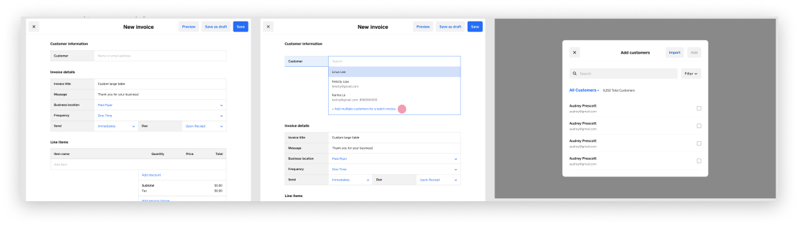

Batch Invoicing
Invoices is working on smarter invoicing software and tooling that helps sellers to manage cash flow, streamline business workflows, and efficiently run business operations (i.e. sending recurring invoices, scheduling automatic payments, accepting payments, and tracking in real-time).
Context
I was working on designing a new paid feature called batch invoicing that enables users to create and send invoices or estimates to a group of customers where the content is otherwise the same (e.g., monthly wine club invoices). This is different from the existing “additional recipients" feature where it’s one invoice sent to several people. Batch invoicing will create invoices for each of the customers. Sellers need a batch creation feature to improve their workflow efficiency.
Process
The batch invoicing feature request has been a long running thread in the community. This new feature's users are high value invoicers, especially those with high volume of invoice transactions:
- I would like to request the ability to batch invoice from an email list or csv file. We are a non-profit sports club with yearly membership fees for about 400 plus people
- I have 100 identical invoices to send to 100 different customers. I uploaded their data and expected to be able to select all 100 in the group and create a single invoice allowing each to renew their annual membership . . . but after some fruitless searches, it appears this feature is still not available
Since the need was clearly identified and problem was well-scoped, I started deconstructing existing UX patterns and invoicing behavior to identify what are the most appropriate interaction patterns and information architecture to include in the new feature. When sellers have an existing group of people or have a local database of clients, how might we seamlessly help them import and create a recurrent / new invoice.
I also looked at competitor's products such as Quickbooks, Zoho and explored their various approaches to solving the problem. The most prominents flows include duplication batching, templates-driven, and tabular batching.
One of the most essential things we had to decide was at one point of the seller's workflow we had to surface the batch feature. A lot of my initial explorations were more focused on surfacing the feature at the beginning of the flow through a secondary CTA, a new component with the button's dropdown option, or a new extra modal. However, it introduces more friction to seller's exsiting flow.
Throughout several iteration and design crit reviews, we wanted to explore a more integrated direction, surfacing the feature at the point when it is more relevant to sellers without trading off workflow distraction at the initial creation flow. I explored the modal approach with a segmented control depending on amount of customers a seller wants to include in the invoice.
 At the time of the project another consideration that has helped to narrow down the solution was whether engineering capacity could afford updating all components to a new design system. The team's priority at the time was to move to a new component library at a more gradual approach, and so it narrowed down the final design solution to a more familiar workflow for sellers, where they can add multiple customers to create a batch invoice from a well-known flow.
